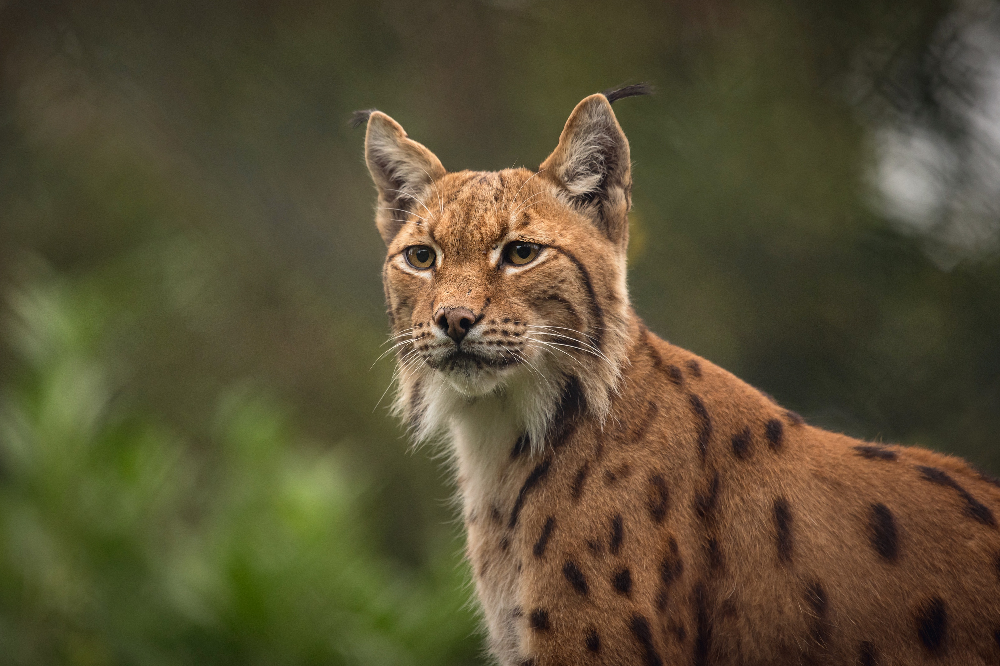

Lynxes have powerful padded paws that act like snowshoes, helping them walk easily across deep snow.
The lynx is a medium-sized wild cat known for its tufted ears, short tail, and excellent hunting skills. It thrives in cold forest regions.